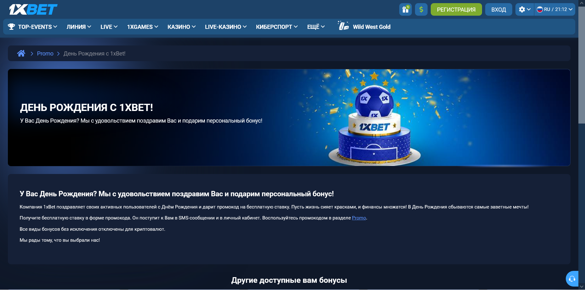

Подарок 1xBet ко дню рождения: где искать код и как его ввести
Бонус на день рождения 1xBet на 3 октября 2026 года описан в публичной карточке «День рождения с 1xBet!» как персональный промокод на бесплатную ставку для активных пользователей. Код приходит по SMS и в личный кабинет, а применяется в разделе Promo. Номинал, срок действия и доступность подарка для аккаунта из Москвы в карточке не указаны.
Что видно в карточке подарка на 3 октября 2026 года
Карточка «День рождения с 1xBet!» открывалась на указанном пользователем зеркале 3 октября 2026 года без входа в аккаунт. В карточке четыре проверяемых утверждения: подарок получают активные пользователи, подарок выдаётся промокодом на бесплатную ставку, код приходит в SMS-сообщении и в личный кабинет, а применяется в разделе Promo. Пятое правило карточки: все виды бонусов без исключения отключены для криптовалют. Подзаголовок карточки обещает имениннику персональный бонус от 1xBet, а основной текст уточняет форму подарка — бесплатную ставку в виде промокода.

Подарок 1xBet ко дню рождения в этой карточке не имеет номинала, срока действия, минимального коэффициента и списка стран. Каталог акций в той же сессии показывал суммы в сейшельских рупиях (SCR), поэтому наблюдение относится к показанной географии, а не к российскому аккаунту. Наличие карточки не означает, что подарок выдан конкретному человеку.
Как получить бонус на день рождения 1xBet: условия из общих правил
Общие правила 1xBet о счёте, выплатах и бонусах (раздел 6.3, снимок 3 октября 2026 года) действуют для любых бонусов, включая подарки. Отдельного порога активности для именинников в разделе нет, поэтому список ниже содержит только прямые требования правил.
- бонусы доступны только зарегистрированным клиентам;
- все поля личных данных в учётной записи заполнены;
- в настройках личного кабинета отмечено поле «Принимать участие в бонусных акциях»;
- на одного клиента, семью, адрес или общий IP-адрес приходится один бонус;
- по запросу отдела безопасности клиент предоставляет документы, иначе бонусы и выигрыши аннулируются.
Дата рождения в профиле 1xBet входит в те же личные данные. Обзоры Ratingbet и bonus-betting.ru советуют указать её точно по документу и подтвердить номер телефона, потому что SMS с кодом уходит на привязанный номер. Критерий «активный пользователь» публичная карточка не раскрывает числом ставок или пополнений.
Что пишут обзоры о подарке 1xBet и где они расходятся
Обзоры подарка 1xBet на день рождения, сохранённые 3 октября 2026 года из выдачи Google и Яндекса, сходятся в формате (бесплатная ставка по промокоду) и расходятся в деталях. Таблица сводит утверждения с датой публикации; карточка оператора ни одно из них не подтверждает.
| Источник и дата | Что утверждает | Есть ли в карточке оператора |
|---|---|---|
| Карточка 1xBet, снимок 3 октября 2026 года | Промокод на бесплатную ставку; SMS и личный кабинет; раздел Promo; бонусы отключены для криптовалют | Первичный источник |
| Eurostavka, обновлено 21 ноября 2022 года | Код приходит не позднее чем через сутки после дня рождения; фрибет действует 7 суток; максимальный коэффициент 3,5 | Нет |
| FullBet, 30 марта 2022 года | Промокод действует 30 дней; коэффициент от 1,5; автор получал ставки на 14,21–16,15 USD | Нет |
| bonus-betting.ru, обновлено 15 июня 2026 года | Подарок получают клиенты, зарегистрированные минимум за месяц до праздника | Нет |
| Ratingbet, дата не указана | SMS с кодом повторно не отправляют; запрос на странице Promo — не чаще 1 раза в 3 дня | Нет |
Срок действия бесплатной ставки в обзорах различается больше чем в 4 раза: 7 суток у Eurostavka против 30 дней у FullBet. Коэффициент описан то как потолок 3,5, то как минимум 1,5. Для конкретного кода верны только условия из полученного сообщения и личного кабинета: общие правила указывают, что дата истечения показана в учётной записи.
Как ввести персональный код и что проверить перед ставкой
Персональный промокод 1xBet карточка предлагает вводить в разделе Promo; общие правила для таких кодов называют раздел «Бонусы и подарки». Регистрационное поле «Промокод (при наличии)» служит для создания нового аккаунта, и здесь оно не нужно.
- найдите SMS на номере из профиля и уведомление в личном кабинете, код никому не пересылайте;
- введите код в разделе Promo или в разделе, который назван в уведомлении;
- проверьте, что выбран основной кошелёк: по правилам такие коды активируются только в нём, а другой валютный кошелёк аннулирует предложение и прогресс отыгрыша;
- убедитесь, что нет другого активного предложения: одновременно активным может быть только один подарок;
- запишите дату истечения: после неё код и выигрыши по нему утрачиваются.
Выигрыш по подарку 1xBet после выполнения требований по отыгрышу общие правила зачисляют на баланс в течение 24 часов, если в условиях не указано иное. Нужен ли отыгрыш и какая часть выигрыша по бесплатной ставке выводится, решают условия конкретного кода; порядок расчёта разобран в методе расчёта отыгрыша.
Если поздравление не пришло
Поздравление 1xBet может не прийти по причинам, которые прямо названы в правилах: незаполненные поля профиля, снятая отметка участия в акциях, второй аккаунт на ту же семью или IP-адрес, незавершённая проверка документов. Проверка присланных документов, по тем же правилам, может занять до 72 часов с момента получения. Криптовалютный счёт тоже исключает поздравительный код: карточка отключает для криптовалют все виды бонусов. Общую схему поиска причины даёт страница о неначисленном бонусе.
Поздравительное SMS ищите на привязанном номере, а уведомление — в личном кабинете. Если сообщения нет, сверьте номер и дату рождения в профиле. Публичная страница не определяет «активного пользователя» числом ставок или пополнений, поэтому конкретный порог предполагать не стоит.
Служба поддержки 1xBet отвечает на вопрос о праве на персональный код. В обращении укажите название акции и дату рождения, но документ в открытый чат не отправляйте, и попросите уточнить срок кода и условия бесплатной ставки.
Частые вопросы
Нужен ли депозит для подарка на день рождения?
Карточка подарка о депозите молчит. Общие правила 1xBet требуют депозит для получения подарка, «если иное прямо не указано в правилах», а для использования уже полученного подарка депозит не обязателен. Ответ зависит от условий кода.
Подарочный код — тот же, что при регистрации?
Подарочный код и регистрационный промокод различаются по назначению. Промокод нового аккаунта вводится при регистрации, а персональный код — в разделе Promo существующего аккаунта.
Можно ли передать код другу?
Правила 1xBet запрещают передавать учётные записи и ограничивают бонус одним клиентом, семьёй и IP-адресом. Ratingbet добавляет, что код работает только в аккаунте, на который выдан.
Как отыграть полученный подарок?
Фрибет по поздравительному коду отыгрывается по собственным условиям из сообщения: прочитайте их и разбор бесплатных ставок.
Источники и ограничения
Первичные данные сняты 3 октября 2026 года в приватной сессии без входа в аккаунт: карточка «День рождения с 1xBet!» и раздел 6.3 общих правил о счёте и выплатах. Обзоры конкурентов процитированы с датами публикации и правил не заменяют. Сведения о номинале, сроке и доступности для Москвы остаются неподтверждёнными до появления первичных условий для российского аккаунта. Ставки доступны только с 18 лет; о лимитах расходов — в материале про ответственную игру.